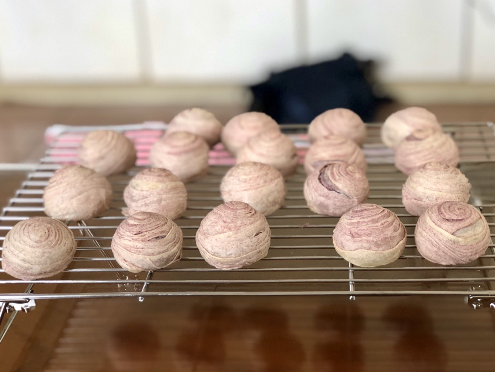
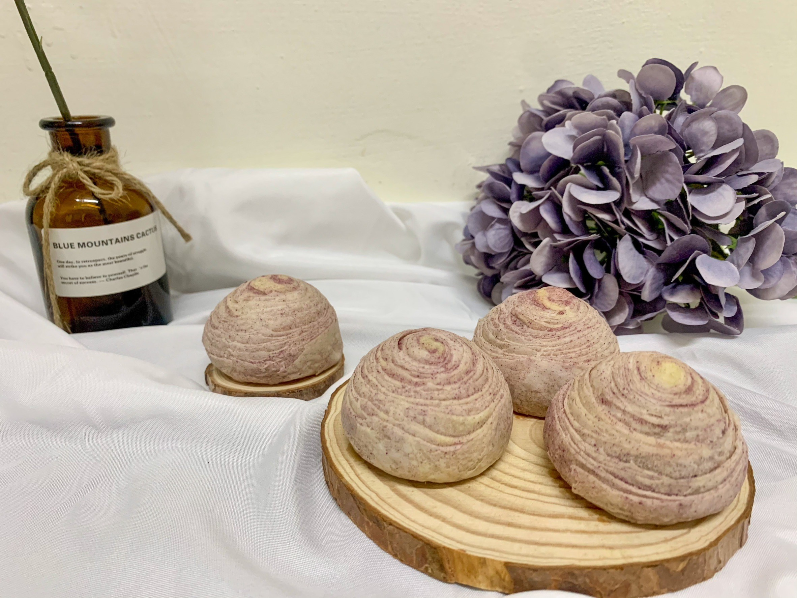
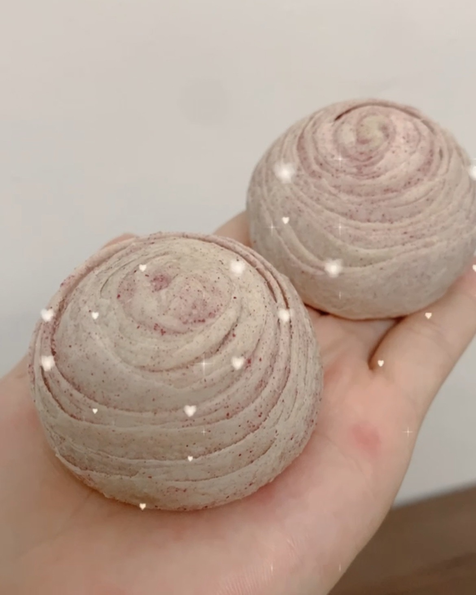

1.png)
食譜第四章 -『 芋頭酥 』


【介紹】
芋頭酥是一種口感酥脆、內餡香甜的傳統點心，深受許多人喜愛。它的外層通常是由酥皮製成，餡料則以芋頭泥、糯米糰或豆沙為主，口感香甜，食用起來非常美味。
芋頭酥的歷史可以追溯到中國南方的客家族群，傳統上是作為祭祀用品，後來逐漸演變成為一種風味獨特的小吃。隨著時間的推移，芋頭酥的製作工藝和配料也不斷變化和創新，現在已經成為了中國南方地區的代表性點心之一。
芋頭酥的製作過程非常繁複，需要精細的技巧和耐心。首先，將芋頭去皮切塊，蒸熟後搗成芋泥，並加入糖、油、鹽等調料調味，製成內餡。然後，將麵粉和油混合攪拌成麵糰，搓成小團，用擀麵棍擀成薄片，再包入芋頭泥做成酥皮。
芋頭酥在食用前通常需要烤熟或炸熟，使其外層更加酥脆。一口咬下去，酥皮和香甜芋頭泥的組合讓人愉悅不已，獨特的口感也讓人回味無窮。除了芋頭泥，還有其他的餡料，如糯米糰、紅豆泥等，每種餡料都可以搭配不同的口感和風味，讓人發現不同的驚喜。
總的來說，芋頭酥是一種風味獨特、製作精細的點心，由其酥脆的外皮和香甜的內餡組成。它源自於中國南方地區的傳統點心，經過歷史的沉澱和改良，已經成為了人們喜愛的美食之一。



【食材準備】
➀芋頭餡：
芋頭 725g
紫色的蕃薯 75g
二號砂糖 190g
無鹽奶油 0g
鮮奶油 適量
➁油皮：
中筋麵粉 90g
低筋麵粉 110g
無水奶油 80g
糖粉 40g
冷水(冰水) 80g
鹽巴 一撮
➂油酥：
低筋麵粉 210g
無水奶油 90g
紫薯粉 25g
‼️上面配方僅供參考，覺得太乾、太濕、太甜、不甜、顏色不夠⋯⋯自己都可以做微調。 覺得量太多可以等比例去做微調。
【製作過程】
一、製作：➀芋頭餡
⒈ 先將芋頭及紫薯放入電鍋蒸，外鍋加水，切記內鍋不要加水(怕底部燒焦可以加一點點，不要太多，不然會太濕)
⒉ 蒸好後，拿出來趁熱的趕快把它們全部壓碎
⒊ 加入糖混合(一定要有溫度的時候就趕快加)
⒋ 加入奶油混合，再加入鮮奶油混合即可
*分成32個，每個25g，搓圓。
(我都是前一天先做餡料，冰起來隔天用)
二、製作：➁油皮
⒌ 過篩中筋麵粉、低筋麵粉、糖粉加入盆中再加入鹽巴混合在一起
⒍ 加入無水奶油用切拌或用手混合均勻
⒎ 再分批加入冷水混合成團，太濕可以再加一點中筋麵粉
⒏ 最後放在桌上揉到不黏、有一點點光滑即可(不用像麵包或包子麵團要揉很久)
⒐ 用保鮮膜包起來放在旁邊鬆弛30-40分
*平分成16個，每個約24g。
三、製作：➂油酥
⒑ 過篩低筋麵粉倒入盆中加入無水奶油混合成團
⒒加入紫薯粉混合均勻即可
四、組合
⒓將每個都油皮包入油酥，收口朝上。
⒔ 用掌心壓平在用桿麵棍擀成長條狀，直直的捲起或斜斜的捲起擇一即可，靜置10分鐘
⒕ 開口處朝上用掌心壓平在用桿麵棍擀成長條狀(盡量讓中心有一點厚度)，由上往下直直的捲起(想層次多可以盡量擀長一點)
⒖ 將捲好的麵團對切(一刀完成，不要來回切)
⒗紋路面漂亮的朝下，用掌心壓平在用桿麵棍擀成圓形薄狀
⒘ 紋路面漂亮的朝外，包入內餡，一手大拇哥壓內餡，另一手用虎口收口，整成橢圓形，收口朝下
⒙ (先預熱烤箱10分鐘，上下火各170度)，放入預熱好烤箱烤30分鐘，烤完就完成了。


.png)